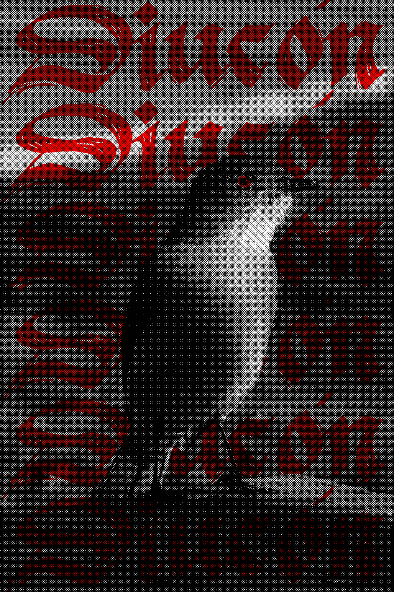
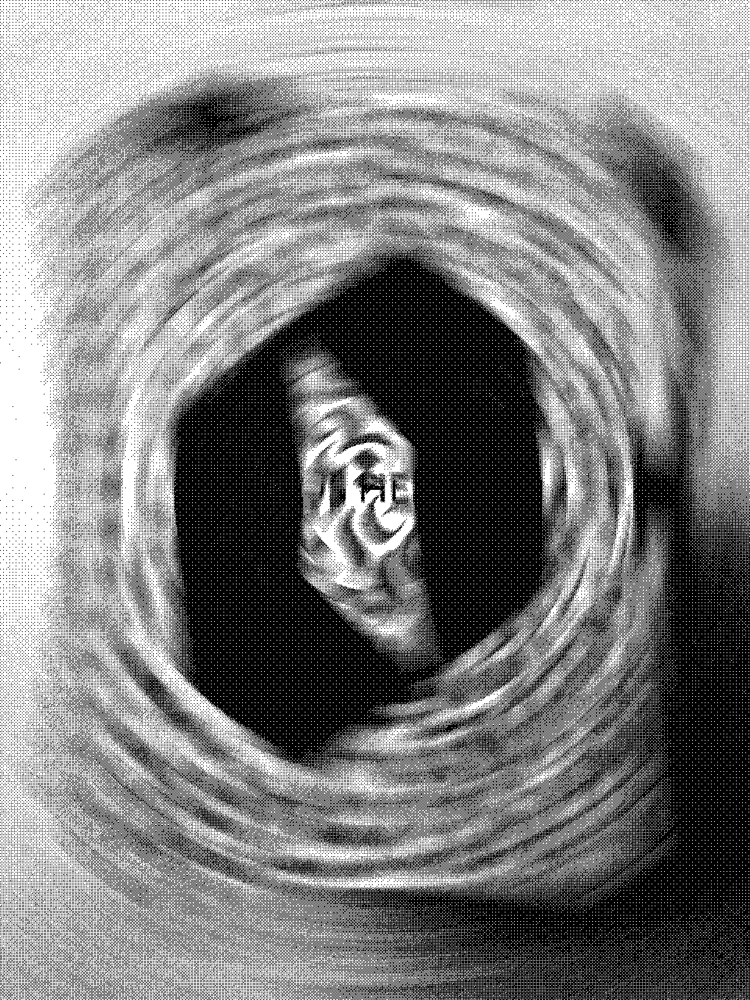
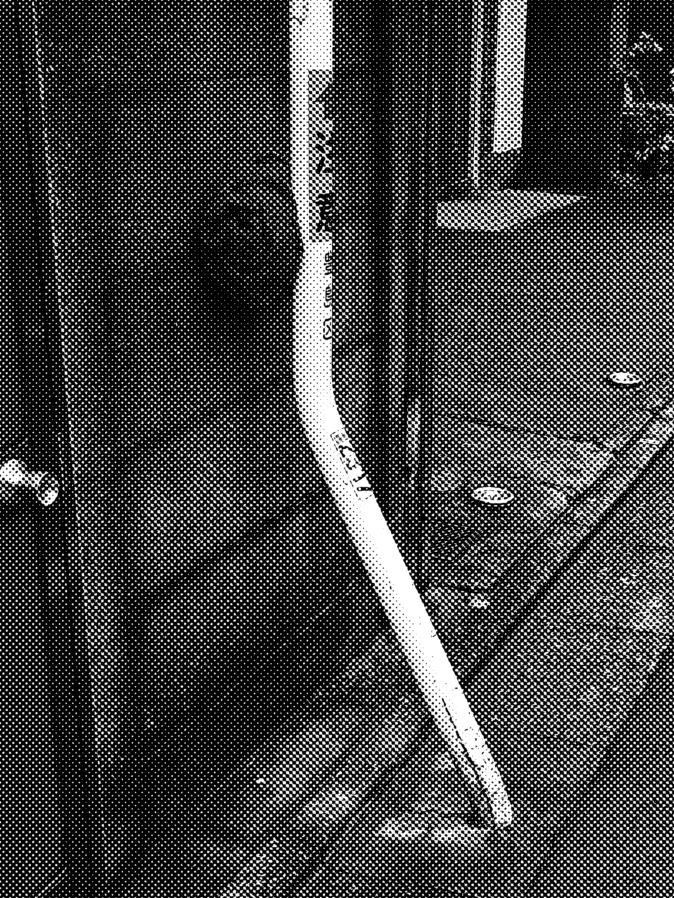
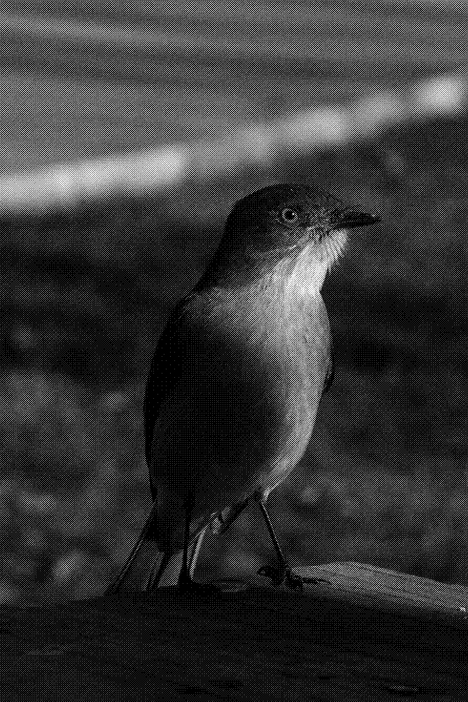
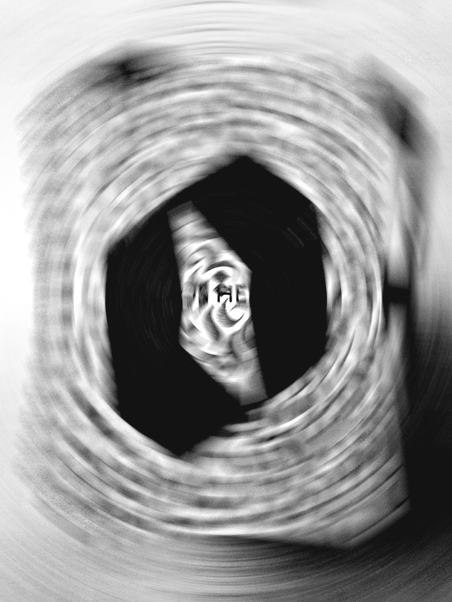

El trazo.
La huella.
893.studio es un archivo de exploración visual.
Letra, imagen y materia en una misma superficie.

Ampliar pieza
Archivo de proyectos
Una selección de formas, texturas y trazos.
6 piezas



AmpliarEspiral
Experimentación · Trama

AmpliarFragmento urbano
Imagen · Semitono

AmpliarDiucón / Estudio
Imagen · Naturaleza.png) Ampliar
Ampliar Del trazo al carácter
Letra · ASCII

AmpliarMovimiento circular
Experimentación · DistorsiónEntre la tinta
y el píxel.
Un espacio para explorar la fuerza de la letra, el contraste y las texturas. Este archivo reúne piezas donde la caligrafía gótica convive con la fotografía, la trama y la manipulación digital.
893.studio / Portafolio visual